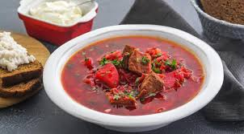

Борщ
Борщ… Ну, кто его не знает? Его хоть раз в жизни пробовал каждый. У любой хозяйки свой рецепт борща, и именного его она считает правильным и единственно верным. Борщ готовят и с фасолью, и с болгарским перцем, и т.д. Я предлагаю рецепт, который нам очень нравится. Количество ингредиентов указано на четырехлитровую кастрюлю.
Ингридиенты:

1 кг говядины (мякоть или на косточке)
500 г картофеля
300 г свежей капусты
400 г свеклы
200 г моркови
200 г лука
3 ст.л. томатной пасты
1 ч.л. уксуса 6%
2–3 зубчика чеснока
2–3 лавровых листа
соль
перец
растительное масло
зелень по вкусу
Приготовление
Мясо залить водой, варить 1.5 часа.
Затем мясо нарезать небольшими кусочками.
Добавить в бульон.
Лук мелко нарезать.
Морковь натереть на средней терке.
Капусту нашинковать тонкой соломкой.
Свеклу нарезать тонкой соломкой.
Свеклу обжарить на растительном масле.
Добавить уксус и томатную пасту (если паста густая, добавить немного воды), тушить 5–7 минут.
На растительном масле обжарить лук.
Добавить морковь, обжарить.
Картофель нарезать кубиками или брусочками.
В кипящий бульон добавить картофель, посолить.
Когда бульон закипит, добавить капусту. Варить на небольшом огне 5 минут.
Добавить свеклу, варить еще около 10 минут.
Добавить лук и морковь.
Следом добавить лавровый лист. Если необходимо, посолить, поперчить.
Добавить чеснок, выдавленный через чеснокодавку.
Убрать с огня, дать настояться 15–20 минут.
Готовый борщ разлить по тарелкам, добавить сметану и посыпать зеленью.